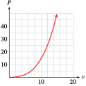
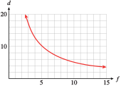
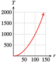

Exercises 3.6 Homework 3.2
¶1.
Make a table showing powers of \(3\) from \(3^{-5}\) to \(3^5\text{.}\) Illustrate why defining \(3^0 = 1\) makes sense.
| \(n\) | \(-5\) | \(-4\) | \(-3\) | \(-2\) | \(-1\) | \(0\) | \(1\) | \(2\) | \(3\) | \(4\) | \(5\) |
| \(3^n\) | \(\frac{1}{243} \) | \(\frac{1}{81} \) | \(\frac{1}{27} \) | \(\frac{1}{9} \) | \(\frac{1}{3} \) | \(1\) | \(3\) | \(9\) | \(27\) | \(81\) | \(243\) |
Each time \(n\) increases by \(1\text{,}\) we multiply the power in the bottom row by \(3\text{.}\)
2.
Make a table showing powers of \(5\) from \(5^{-4}\) to \(5^4\text{.}\) Illustrate why defining \(5^0 = 1\) makes sense.
For Problems 3–6, compute each power.
3.
\(2^3\)
\((-2)^3 \)
\(2^{-3}\)
\((-2)^{-3} \)
\(8\)
\(-8\)
\(\dfrac{1}{8} \)
\(\dfrac{-1}{8} \)
4.
\(4^2\)
\((-4)^2 \)
\(4^{-2}\)
\((-4)^{-2} \)
5.
\(\left(\dfrac{1}{2} \right)^3\)
\(\left(-\dfrac{1}{2} \right)^3 \)
\(\left(\dfrac{1}{2} \right)^{-3}\)
\(\left(-\dfrac{1}{2} \right)^{-3} \)
\(\dfrac{1}{8} \)
\(\dfrac{-1}{8} \)
\(8 \)
\(-8 \)
6.
\(\left(\dfrac{1}{4} \right)^2\)
\(\left(-\dfrac{1}{4} \right)^2 \)
\(\left(\dfrac{1}{4} \right)^{-2}\)
\(\left(-\dfrac{1}{4} \right)^{-2} \)
For Problems 7–12, write without negative exponents and simplify.
7.
\(2^{-1}\)
\((-5)^{-2} \)
\(\left(\dfrac{1}{3} \right)^{-3} \)
\(\dfrac{1}{(-2)^{-4}} \)
\(\dfrac{1}{2^1}=\dfrac{1}{2} \)
\(\dfrac{1}{(-5)^2}=\dfrac{1}{25} \)
\(3^3=27 \)
\((-2)^4=16 \)
8.
\(3^{-2}\)
\((-2)^{-3} \)
\(\left(\dfrac{3}{5} \right)^{-2} \)
\(\dfrac{1}{(-3)^{-3}} \)
9.
\(\dfrac{5}{4^{-3}}\)
\((2q)^{-5} \)
\(-4x^{-2} \)
\(\dfrac{8}{b^{-3}} \)
\(5\cdot 4^3=320 \)
\(\dfrac{1}{(2q)^5}=\dfrac{1}{32q^5} \)
\(\dfrac{-4}{x^2} \)
\(8b^3 \)
10.
\(\dfrac{3}{2^{-6}} \)
\((4k)^{-3} \)
\(-7x^{-4} \)
\(\dfrac{5}{a^{-5}} \)
11.
\((m-n)^{-2} \)
\(y^{-2}+y^{-3} \)
\(2pq^{-4} \)
\(\dfrac{-5y^{-2}}{x^{-5}} \)
\(\dfrac{1}{(m-n)^2} \)
\(\dfrac{1}{y^2}+\dfrac{1}{y^3} \)
\(\dfrac{2p}{q^4} \)
\(\dfrac{-5x^{5}}{y^{2}} \)
12.
\((p+q)^{-3} \)
\(z^{-1}-z^{-2} \)
\(8m^{-2}n^2 \)
\(\dfrac{-6y^{-3}}{x^{-3}} \)
Use your calculator to fill in the tables in Problems 13 and 14. Round your answers to two decimal places.
13.
\(f(x)=x^{-2}\)
\(x\) \(1\) \(2\) \(4\) \(8\) \(16\) \(f(x)\) \(\hphantom{0000} \) \(\hphantom{0000} \) \(\hphantom{0000} \) \(\hphantom{0000} \) \(\hphantom{0000} \) What happens to the values of \(f (x)\) as the values of \(x\) increase? Explain why.
\(x\) \(1\) \(0.5\) \(0.25\) \(0.125\) \(0.0625\) \(f(x)\) \(\hphantom{0000} \) \(\hphantom{0000} \) \(\hphantom{0000} \) \(\hphantom{0000} \) \(\hphantom{0000} \) What happens to the values of \(f (x)\) as the values of \(x\) decrease toward \(0\text{?}\) Explain why.
\(x\) \(1\) \(2\) \(4\) \(8\) \(16\) \(x^{-2}\) \(1 \) \(0.25 \) \(0.06 \) \(0.02 \) \(0.00 \) The values of \(f (x)\) decrease, because \(x^{-2}\) is the reciprocal of \(x^2\text{.}\)
\(x\) \(1\) \(0.5\) \(0.25\) \(0.125\) \(0.0625\) \(x^{-2}\) \(1 \) \(4 \) \(16 \) \(64 \) \(256 \) The values of \(f (x)\) increase toward infinity, because \(x^{-2}\) is the reciprocal of \(x^2\text{.}\)
14.
\(g(x)=x^{-3}\)
\(x\) \(1\) \(2\) \(4.5\) \(6.2\) \(9.3\) \(g(x)\) \(\hphantom{0000} \) \(\hphantom{0000} \) \(\hphantom{0000} \) \(\hphantom{0000} \) \(\hphantom{0000} \) What happens to the values of \(g(x)\) as the values of \(x\) increase? Explain why.
\(x\) \(1.5\) \(0.6\) \(0.1\) \(0.03\) \(0.002\) \(f(x)\) \(\hphantom{0000} \) \(\hphantom{0000} \) \(\hphantom{0000} \) \(\hphantom{0000} \) \(\hphantom{0000} \) What happens to the values of \(g(x)\) as the values of \(x\) decrease toward \(0\text{?}\) Explain why.
15.
-
Use your calculator to graph each of the following functions on the window
\begin{align*} {\text{Xmin}} \amp = -5 \amp\amp {\text{Xmax}} = 5\\ {\text{Ymin}} \amp = -2 \amp\amp {\text{Ymax}} = 10 \end{align*}- \(\displaystyle f(x)=x^2\)
- \(\displaystyle f(x)=x^{-2} \)
- \(\displaystyle f(x)=\dfrac{1}{x^2} \)
- \(\displaystyle f(x)=\left(\dfrac{1}{x} \right)^2 \)
Which functions have the same graph? Explain your results.
b. (ii), (iii), and (iv) have the same graph, because they represent the same function.
16.
-
Use your calculator to graph each of the following functions on the window
\begin{align*} {\text{Xmin}} \amp = -3 \amp\amp {\text{Xmax}} = 5\\ {\text{Ymin}} \amp = -5 \amp\amp {\text{Ymax}} = 5 \end{align*}- \(\displaystyle f(x)=x^3\)
- \(\displaystyle f(x)=x^{-3} \)
- \(\displaystyle f(x)=\dfrac{1}{x^3} \)
- \(\displaystyle f(x)=\left(\dfrac{1}{x} \right)^3 \)
Which functions have the same graph? Explain your results.
For Problems 17–18, write each expression as a power function using negative exponents.
17.
- \(\displaystyle F(r)=\dfrac{3}{r^4} \)
- \(\displaystyle G(w)=\dfrac{2}{5w^3} \)
- \(\displaystyle H(z)=\dfrac{1}{(3z)^2} \)
- \(\displaystyle F(r)=3r^{-4} \)
- \(\displaystyle G(w)=\dfrac{2}{5}w^{-3} \)
- \(\displaystyle H(z)=\dfrac{1}{9}z^{-2} \)
18.
- \(\displaystyle h(s)=\dfrac{9}{s^3} \)
- \(\displaystyle f(v)=\dfrac{3}{8v^6} \)
- \(\displaystyle g(t)=\dfrac{1}{(5t)^4} \)
For Problems 19–24, olve.
25.
When an automobile accelerates, the power, \(P\text{,}\) needed to overcome air resistance varies directly with a power of the speed, \(v\text{.}\)
-
Use the data and the graph to find the scaling exponent and the constant of variation. Then write a formula for \(P\) as a power function of \(v\text{.}\)
\(v\) (mph) \(10\) \(20\) \(30\) \(40\) \(P\) (watts) \(355\) \(2840\) \(9585\) \(22,720\) Find the speed that requires \(50,000\) watts of power.
If you increase your speed by \(50\%\text{,}\) by what factor does the power requirement increase?
- \(\displaystyle P = 0.355v^3\)
\(v\approx 52.03\) mph
- \(\displaystyle 3.375\)
26.
The power, \(P\text{,}\) generated by a windmill varies directly with a power of wind velocity, \(v\text{.}\)
-
Use the data and the graph to find the scaling exponent and the constant of variation. Then write a formula for \(P\) as a power function of \(v\text{.}\)
\(v\) (mph) \(10\) \(20\) \(30\) \(40\) \(P\) (watts) \(15\) \(120\) \(405\) \(960\)  Find the wind velocity needed to generate \(500\) watts of power.
If the wind speed drops by half, what happens to the power generated?
27.
The “Rule of 70” is used to estimate how long it takes an investment to double in value when interest is compounded annually. The doubling time, \(D\text{,}\) is inversely proportional to the interest rate, \(i\text{.}\) (Note that \(i\) is expressed as a percent, not as a decimal fraction. For example, if the interest rate is \(8\%\text{,}\) then \(i = 8\text{.}\))
-
Use the data and the graph to find the constant of proportionality and write \(D\) as a power function of \(i\text{.}\)
\(i\) (mph) \(4\) \(6\) \(8\) \(10\) \(D\) (watts) \(17.5\) \(11.67\) \(8.75\) \(7\) If the interest rate increases from \(5\%\) to \(6\%\text{,}\) how will the doubling time change?
- \(\displaystyle D =\dfrac{70}{i} \)
It decreases by about \(2.3\) years.
28.
The f-stop setting on a camera regulates the size of the aperture and thus the amount of light entering the camera. The f-stop \(f\) is inversely proportional to the diameter, \(d\text{,}\) of the aperture.
-
Use the data and the graph to find the constant of proportionality and write \(d\) as a power function of \(f\text{.}\) Values of \(d\) have been rounded to one decimal place.
\(f\) \(2.8\) \(4\) \(5.6\) \(8\) \(11\) \(d\) \(17.9\) \(12.5\) \(8.9\) \(6.3\) \(4.5\)  Why are the f-stop settings labeled with the values given in the table?
As you stop down the aperture from one f-value to the next, by what factor does \(d\) increase?
29.
The Stefan-Boltzmann law relates the total amount of radiation emitted by a star to its temperature, \(T\text{,}\) in kelvins, by the following formula:
where \(R\) is the radius of the star, \(L\) is its luminosity, and \(s = 5.7\times 10^{-8} \text{ watt/m}^2\) is a constant governing radiation. (See Algebra Skills Refresher (((Unresolved xref, reference "Scientific-Notation"; check spelling or use "provisional" attribute))) to review scientific notation.)
Write a formula for luminosity as a power function of temperature for a fixed radius.
The radius of the Sun is \(R = 9.96\times 10^8\) meters, and its luminosity is \(L = 3.9\times 10^{26}\) watts. Calculate the temperature of the Sun.
\(L = \left(4\pi sR^2 \right)T^4\approx 7.2\times 10^{-7}R^2T^4\)
\(4840\) K
30.
Poiseuille's law for the flow of liquid through a tube can be used to describe blood flow through an artery. The rate of flow, \(F\text{,}\) in liters per minute is proportional to the fourth power of the radius, \(r\text{,}\) divided by the length, \(L\text{,}\) of the artery.
Write a formula for the rate of flow as a power function of radius.
If the radius and length of the artery are measured in centimeters, then the constant of variation, \(k = 7.8\times 10^5\text{,}\) is determined by blood pressure and viscosity. If a certain artery is \(20\) centimeters long, what should its radius be in order to allow a blood flow of \(5\) liters per minute?
31.
Airplanes use radar to detect the distances to other objects. A radar unit transmits a pulse of energy, which bounces off a distant object, and the echo of the pulse returns to the sender. The power, \(P\text{,}\) of the returning echo is inversely proportional to the fourth power of the distance, \(d\text{,}\) to the object. A radar operator receives an echo of \(5\times 10^{-10}\) watts from an aircraft \(2\) nautical miles away.
Express the power of the echo received in picowatts. (\(1\) picowatt \(= 10^{-12}\) watts.)
Write a function that expresses \(P\) in terms of d using negative exponents. Use picowatts for the units of power.
-
Complete the table of values for the power of the echo received from objects at various distances.
\(d\) (nautical miles) \(4\) \(5\) \(7\) \(10\) \(P\) (picowatts) \(\hphantom{0000} \) \(\hphantom{0000}\) \(\hphantom{0000}\) \(\hphantom{0000}\) Radar unit scan typically detect signals as low as \(10^{-13}\) watts. How far away is an aircraft whose echo is \(10^{-13}\) watts?
Sketch a graph of \(P\) as a function of \(d\text{.}\) Use units of picowatts on the vertical axis
32.
The lifetime of a star is roughly inversely proportional to the cube of its mass. Our Sun, which has a mass of one solar mass, will last for approximately \(10\) billion years.
Write a power function for the lifetime, \(L\text{,}\) of a star in terms of its mass, \(m\text{.}\)
Sketch a graph of the function using units of solar mass on the horizontal axis.
How long will a star that is \(10\) times as massive as the Sun last?
One solar mass is about \(2\times 10^{30}\) kilograms. Rewrite your formula for \(L\) with the units of mass in kilograms.
How long will a star that is half as massive as the Sun last?
33.
The amount of force or thrust generated by the propeller of a ship is a function of two variables: the diameter of the propeller and its speed, in rotations per minute. The thrust, \(T\text{,}\) in pounds, is proportional to the square of the speed, \(r\text{,}\) and the fourth power of the diameter, \(d\text{,}\) in feet.
Write a formula for the thrust in terms of the speed if the diameter of the propeller is \(2\) feet.
A propeller of diameter \(2\) feet generates a thrust of \(1000\) pounds at \(100\) rotations per minute. Find the constant of variation in the formula for thrust.
Sketch a graph of the thrust as a function of the propeller speed for a propellor of diameter \(4\) feet. If the speed of the propeller is doubled, by what factor does the thrust increase?
\(T = 16kr^2\)
\(T = 0.1r^2\)
- 
34.
Refer to Problem 33.
Write a formula for the thrust, \(T\text{,}\) in terms of the diameter of the propeller if its speed is \(100\) rotations per minute.
A propeller of diameter \(4\) feet generates a thrust of \(32,000\) pounds at \(100\) rotations per minute. Find the constant of variation in the formula for thrust.
Sketch a graph of the thrust as a function of the diameter of the propeller at a speed of \(100\) rotations per minute. If the diameter of the propeller is doubled, by what factor does the thrust increase?
For Problems 35–40, use the laws of exponents to simplify and write without negative exponents.
35.
\(a^{-3}\cdot a^8 \)
\(5^{-4} \cdot 5^{-3} \)
\(\dfrac{p^{-7}}{p^{-4}} \)
\(\left(7^{-2} \right)^{5} \)
\(a^5\)
\(\dfrac{1}{5^7} \)
\(\dfrac{1}{p^3} \)
\(\dfrac{1}{7^{10}} \)
36.
\(b^{2}\cdot b^{-6} \)
\(4^{-2} \cdot 4^{-6} \)
\(\dfrac{w^{-9}}{w^{2}} \)
\(\left(9^{-4} \right)^{3} \)
37.
\(\left(4x^{-5} \right)\left(5x^2 \right) \)
\(\dfrac{3u^{-3}}{9u^{9}} \)
\(\dfrac{5^6 t^0}{5^{-2}t^{-1}} \)
\(\dfrac{20}{x^3} \)
\(\dfrac{1}{3u^{12}} \)
\(5^8 t \)
38.
\(\left(3y^{-8} \right)\left(2y^4 \right) \)
\(\dfrac{4c^{-4}}{8c^{-8}} \)
\(\dfrac{3^{10}s^{-1}}{3^{-5}s^0} \)
39.
\(\left(3x^{-2}y^3 \right)^{-2} \)
\(\left(\dfrac{6a^{-3}}{b^{2}} \right)^{-2} \)
\(\dfrac{5h^{-3}(h^4)^{-2}}{6h^{-5}} \)
\(\dfrac{x^4}{9y^6} \)
\(\dfrac{a^6 b^4}{36} \)
\(\dfrac{5}{6h^6} \)
40.
\(\left(2x^{3}y^{-4} \right)^{-3} \)
\(\left(\dfrac{a^{4}}{4b^{-5}}\right)^{-3} \)
\(\dfrac{4v^{-5}(v^{-2})^{-4}}{3v^{-8}} \)
For Problems 41–44, write each expression as a sum of terms of the form \(kx^p\text{.}\)
41.
\(\dfrac{x}{3}+\dfrac{3}{x} \)
\(\dfrac{x-6x^2}{4x^3} \)
\(\dfrac{1}{3}x+3x^{-1} \)
\(\dfrac{1}{4}x^{-2}-\dfrac{3}{2}x^{-1} \)
42.
\(\dfrac{2}{x^2}-\dfrac{x^2}{2} \)
\(\dfrac{5x+1}{(3x)^2} \)
43.
\(\dfrac{2}{x^4}\left(\dfrac{x^2}{4}+\dfrac{x}{2}-\dfrac{1}{4} \right) \)
\(\dfrac{x^2}{3}\left(\dfrac{2}{x^4}-\dfrac{1}{3x^2}+\dfrac{1}{2} \right) \)
\(\dfrac{1}{2}x^{-2}+x^{-3}-\dfrac{1}{2}x^{-4} \)
\(\dfrac{2}{3}x^{-2}-\dfrac{1}{9}+\dfrac{1}{6}x^{2} \)
44.
\(\dfrac{9}{x^3}\left(\dfrac{x^3}{3}-1-\dfrac{1}{x^3} \right) \)
\(\dfrac{x^2}{2}\left(\dfrac{3}{x}-\dfrac{5}{x^3}+\dfrac{7}{x^5} \right) \)
For Problems 45–50, use the distributive law to write each product as a sum of power functions.
For Problems 51–54, factor as indicated, writing the second factor with positive exponents only.
55.
Is it true that \((x + y)^{-2} = x^{-2} + y^{-2}\text{?}\) Explain why or why not.
Give a numerical example to support your answer.
No, because \(\frac{1}{(x+y)^2}\) is not \(\frac{1}{x^2} + \frac{1}{y^2}\text{.}\)
Let \(x = 1\text{,}\) \(y = 2\text{,}\) then \((x + y)^{-2} = (1 + 2)^{-2} = 3^{-2} = \frac{1}{9}\text{,}\) but \(x^{-2} + y^{-2} = 1^{-2} + 2^{-2} = 1 + \frac{1}{4} = \frac{5}{4}\)
56.
Is it true that \((a - b)^{-1} = a^{-1} - b^{-1}\text{?}\) Explain why or why not.
Give a numerical example to support your answer.
57.
Show that \(x + x^{-1} = \dfrac{x^2 +1}{x}\text{.}\)
Show that \(x^3 + x^{-3} = \dfrac{x^6 +1}{x^3}\text{.}\)
Write \(x^n + x^{-n}\) as an algebraic fraction. Justify your answer.
\(x + x^{-1} = x + \dfrac{1}{x} = \dfrac{x^2}{x}+\dfrac{1}{x}= \dfrac{x^2 + 1}{x}\)
\(x^3 + x^{-3} = x^3 + \dfrac{1}{x^3} = \dfrac{x^6}{x^3}+\dfrac{1}{x^3}= \dfrac{x^6 + 1}{x^3}\)
\(x^n + x^{-n} = x^n + \dfrac{1}{x^n} = \dfrac{x^{2n}}{x^n}+\dfrac{1}{x^n}= \dfrac{x^{2n} + 1}{x^2}\)
58.
Show that \(x^{-m} + x^{-n} = \dfrac{x^n +x^m}{x^{n +m}}\text{.}\)
If \(m \lt n\text{,}\) show that \(x^{-m} + x^{-n} = \dfrac{x^{n-m} +1}{x^{n} }\text{.}\)
By rewriting the expressions in Problems 59–62 as fractions, verify that the laws of exponents hold for negative exponents . Show where you apply the corresponding law for positive exponents. Here is the fourth law as an example:
59.
\(a^{-2}a^{-3}=a^{-5} \)
60.
\(\dfrac{a^{-6}}{a^{-2}}=a^{-4}\)
61.
\(\dfrac{a^{-2}}{a^{-6}}=a^{4}\)
62.
\(\left(a^{-2}\right)^{-3}=a^6 \)